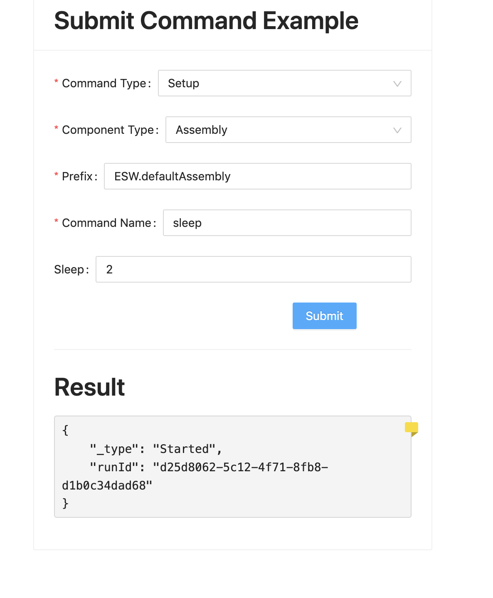

Adding a Submit Command
In this part of the tutorial, we want to send a Setup Command to an Assembly from the UI application via Gateway server.
Visit here to learn more about commands.
Visit here to learn more about components.
Start an Assembly using esw-shell
We will use the esw-shell utility to create and start a simple Assembly. The esw-shell is a REPL application that provides numerous tools for TMT programming. Visit here to learn more about the esw-shell utility.
cs install esw-shell
esw-shell start
@ // you are inside ammonite repl now
We will use an esw-shell feature that allows the dynamic creation of component by specifying command handler functionality when spawning the component.
Our assembly will take a sleep command with sleepInSeconds (LongKey) parameter. This is a long-running command which will return a Started response immediately and then a Completed response after sleeping the time provided in the parameter. Any other command other than sleep immediately returns a Completed response.
Run this command inside esw-shell’s ammonite shell:
spawnAssemblyWithHandler(
"ESW.defaultAssembly",
(ctx, cswCtx) =>
new DefaultComponentHandlers(ctx, cswCtx) {
override def onSubmit(runId: Id, controlCommand: ControlCommand): CommandResponse.SubmitResponse = {
controlCommand.commandName.name match {
case "sleep" =>
val defaultSleepParam = LongKey.make("sleepInSeconds").set(5)
val sleepParam = controlCommand.paramType.get("sleepInSeconds", LongKey).getOrElse(defaultSleepParam)
cswCtx.timeServiceScheduler.scheduleOnce(UTCTime(UTCTime.now().value.plusSeconds(sleepParam.value(0)))) {
cswCtx.commandResponseManager.updateCommand(CommandResponse.Completed(runId))
}
CommandResponse.Started(runId)
case _ => CommandResponse.Completed(runId)
}
}
}
)
This should start an assembly with prefix ESW.defaultAssembly.
Add Submit Command Component
Assuming that you have followed the basic flow, we can go further and add functionality to the UI to submit a command to our assembly.
Create the file SubmitCommand.tsx in the src/components folder.
Copy the following code into SubmitCommand.tsx:
- Typescript
-
source
import { CommandService, ComponentId, longKey, Observe, Prefix, Setup } from '@tmtsoftware/esw-ts' import type { SubmitResponse } from '@tmtsoftware/esw-ts' import { Badge, Button, Card, Divider, Form, Input, message, Select, Typography } from 'antd' import type { PresetColorType } from 'antd/lib/_util/colors' import React, { useState } from 'react' import { useAuth } from '../hooks/useAuth' const getResultType = ( resultType: SubmitResponse['_type'] ): PresetColorType => { switch (resultType) { case 'Started': return 'yellow' case 'Completed': return 'green' case 'Cancelled': return 'yellow' default: return 'red' } } export const SubmitCommand = ({ _commandService }: { _commandService?: CommandService }): JSX.Element => { const { auth } = useAuth() const authData = { tokenFactory: () => auth?.token() } const [prefix, setPrefix] = useState<string>('') const [command, setCommand] = useState<string>('') const [sleepTime, setSleepTime] = useState<number>() const [result, setResult] = useState<SubmitResponse>() const [commandType, setCommandType] = useState<'Setup' | 'Observe'>('Setup') const [componentType, setComponentType] = useState<'HCD' | 'Assembly'>( 'Assembly' ) const submit = async () => { try { const sleepInMs = longKey('sleepInSeconds').set([ sleepTime ? sleepTime : 0 ]) const commandService = _commandService ? _commandService : await CommandService( new ComponentId(Prefix.fromString(prefix), componentType), authData ) const _command = commandType === 'Observe' ? new Observe(Prefix.fromString(prefix), command, [sleepInMs]) : new Setup(Prefix.fromString(prefix), command, [sleepInMs]) const result = await commandService.submit(_command) switch (result._type) { case 'Started': setResult(result) const res = await commandService.queryFinal(result.runId, 5) setResult(res) break default: setResult(result) break } } catch (e) { message.error((e as Error).message) setResult(undefined) } } return ( <Card style={{ maxWidth: '30rem', maxHeight: '45rem' }} title={ <Typography.Title level={2}>Submit Command Example</Typography.Title> }> <Form> <Form.Item label='Command Type' required> <Select id='commandType' value={commandType} onChange={(e) => setCommandType(e)}> <Select.Option value='Setup'>Setup</Select.Option> <Select.Option value='Observe'>Observe</Select.Option> </Select> </Form.Item> <Form.Item label='Component Type' required> <Select id='componentType' value={componentType} onChange={(e) => setComponentType(e)}> <Select.Option value='HCD'>HCD</Select.Option> <Select.Option value='Assembly'>Assembly</Select.Option> </Select> </Form.Item> <Form.Item label='Prefix' required> <Input role='Prefix' value={prefix} placeholder='ESW.defaultAssembly' onChange={(e) => setPrefix(e.target.value)} /> </Form.Item> <Form.Item label='Command Name' required> <Input role='commandName' value={command} placeholder='noop' onChange={(e) => setCommand(e.target.value)} /> </Form.Item> <Form.Item label='Sleep' hidden={command !== 'sleep'}> <Input role='sleep' value={sleepTime} placeholder='Enter value in terms of milliseconds' type='number' onChange={(e) => setSleepTime(Number(e.target.value))} /> </Form.Item> <Form.Item wrapperCol={{ offset: 16, span: 16 }}> <Button role='Submit' type='primary' onClick={submit} disabled={prefix === '' || command === ''}> Submit </Button> </Form.Item> </Form> <Divider /> <Typography.Title level={2}>Result</Typography.Title> <Typography.Paragraph> {result && ( <Badge.Ribbon color={getResultType(result._type)} style={{ width: '0.75rem', height: '0.75rem' }}> <pre role='result'>{JSON.stringify(result, null, 4)}</pre> </Badge.Ribbon> )} </Typography.Paragraph> </Card> ) }
There is a lot to unpack here, so we will describe the code in sections.
Within the return statement, we specify a <Card> component to be the root component of our form. Here we provide some styling as well as titles for our sections, and a section at the bottom to display the result. The form for composing the command in encoded in a <Form> component. Within it, we have the following components:
- CommandType - A Selectable with Options(Setup/Observe)
- ComponentType - A Selectable with Options(Assembly/HCD)
- Prefix - A Text Input (user to put Appropriate Prefix of our Assembly)
- Command - A Text Input (user to put command
sleepor anything else) - Sleep - A Optional field visible only when command is
sleep(Time to sleep in seconds). - Submit - A Button to submit command.
In the definition of the SubmitCommand object near the top of the file, we define React state hooks to store the values specified in our form.
- Typescript
-
source
const [prefix, setPrefix] = useState<string>('') const [command, setCommand] = useState<string>('') const [sleepTime, setSleepTime] = useState<number>() const [result, setResult] = useState<SubmitResponse>() const [commandType, setCommandType] = useState<'Setup' | 'Observe'>('Setup') const [componentType, setComponentType] = useState<'HCD' | 'Assembly'>( 'Assembly' )
The definition of each state specifies a tuple that gives the name of variable to hold the value, and the name of the setter method for that state variable. These are used in each corresponding Form component in the value and onChange attributes.
Next, note the submit method defined after the command state hooks. This defines the action to be called when the Submit button is clicked. This is linked to the Button component in the onFinish attribute.
- Typescript
-
source
const submit = async () => { try { const sleepInMs = longKey('sleepInSeconds').set([ sleepTime ? sleepTime : 0 ]) const commandService = _commandService ? _commandService : await CommandService( new ComponentId(Prefix.fromString(prefix), componentType), authData ) const _command = commandType === 'Observe' ? new Observe(Prefix.fromString(prefix), command, [sleepInMs]) : new Setup(Prefix.fromString(prefix), command, [sleepInMs]) const result = await commandService.submit(_command) switch (result._type) { case 'Started': setResult(result) const res = await commandService.queryFinal(result.runId, 5) setResult(res) break default: setResult(result) break } } catch (e) { message.error((e as Error).message) setResult(undefined) }
This method makes use of the Command Service Typescript client which provides access to the Command Service routes in the Gateway. It constructs the appropriate command from the form and submits it to the Assembly as specified by the Prefix field. It then gets the results and calls the SetResult state hook setter. This causes the result to be displayed in the result component, which we defined at the bottom of the Card component:
- Typescript
-
source
<Typography.Title level={2}>Result</Typography.Title> <Typography.Paragraph> {result && ( <Badge.Ribbon color={getResultType(result._type)} style={{ width: '0.75rem', height: '0.75rem' }}> <pre role='result'>{JSON.stringify(result, null, 4)}</pre> </Badge.Ribbon> )} </Typography.Paragraph>
We provide additional functionality to help track result status by color coding a small flag in result component based on its type. Note that the color of the flag depends on the evaluation of a method we define at the top of the file, which returns the appropriate color based on the result type. This function goes outside of the component because it is independent of React component’s state.
- Typescript
-
source
const getResultType = ( resultType: SubmitResponse['_type'] ): PresetColorType => { switch (resultType) { case 'Started': return 'yellow' case 'Completed': return 'green' case 'Cancelled': return 'yellow' default: return 'red' } }
Integrate SubmitCommand Component
Finally, update Main.tsx to include SubmitCommand component.
Replace the Hello World text with our component, <SubmitCommand />, below div’s style tag, and add the necessary import.
- Typescript
-
source
export const Main = (): JSX.Element => { const { auth } = useAuth() if (!auth) return <div>Loading</div> const isAuthenticated = auth?.isAuthenticated() ?? false return isAuthenticated ? ( <div style={{ display: 'flex', placeContent: 'space-around', paddingTop: '2rem' }}> <SubmitCommand /> </div> ) : ( <Login /> ) }
UI should render the following view at this moment.

Fill in the values for all input fields and submit.
prefix : ESW.defaultAssembly
command : sleep
sleep : 2
The UI should be updated with the following results.
First the UI receives Started response.

And after 2 seconds, the Completed response is received.

- Follow the tutorial here to add the Subscribe Event functionality.